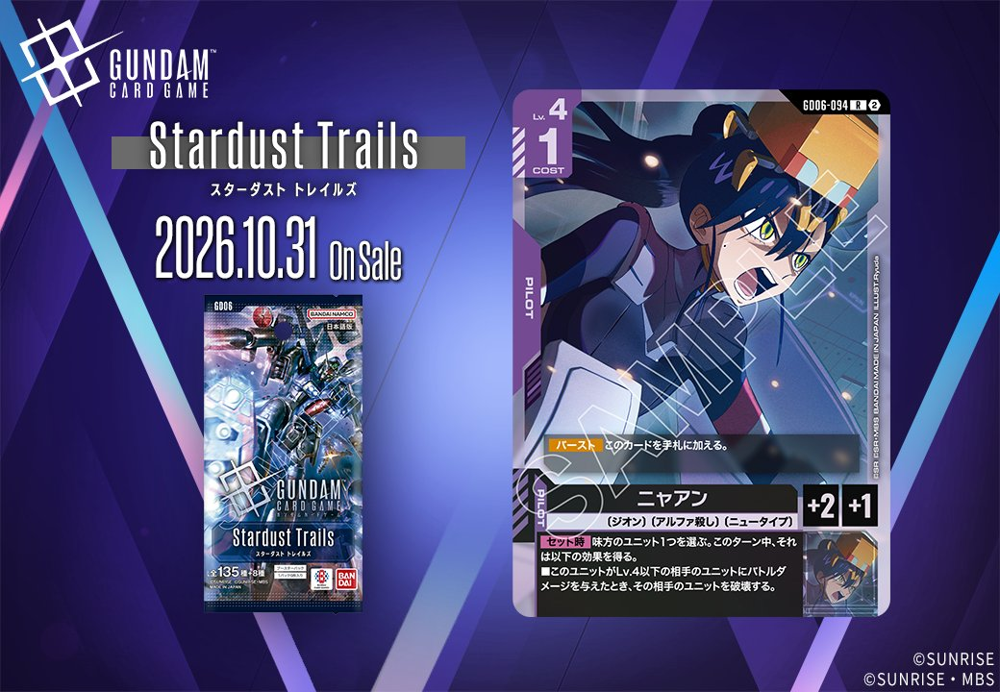
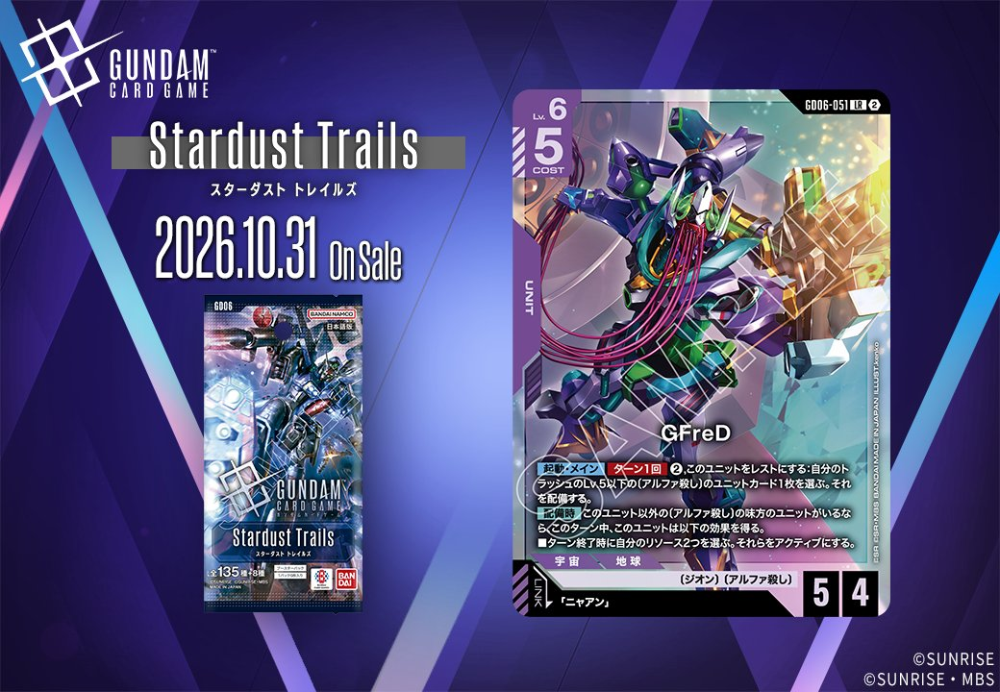
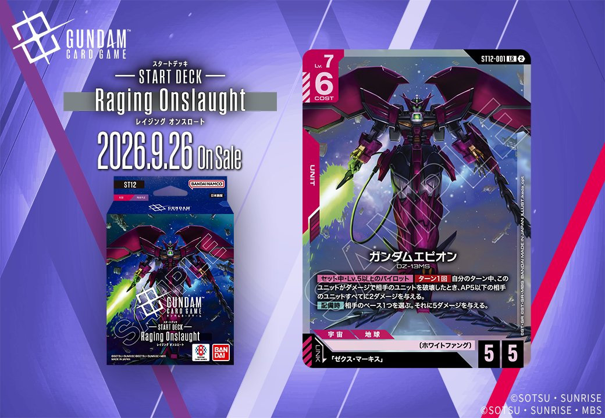

今回は3枚の新カードを紹介します。うち紫のPILOT「ニャアン」(GD06-094)とUNIT「GFreD」(GD06-051、リンク条件「ニャアン」)は同日公開のUNITとPILOTがリンクで結ばれる組合せで、GFreDのリンク条件をニャアンが満たす関係にあります。GFreDは「Stardust Trails」、ニャアンは「GD06」に収録され、いずれも2026-10-31発売です。加えて赤のUNIT「ガンダムエピオン」(ST12-001、リンク条件「ゼクス・マーキス」)は「ST12」収録で2026-09-26発売となっています。

ニャアン (GD06-094)
| 色 | 紫 | タイプ | PILOT |
| Lv | 4 | コスト | 1 |
| 補正 AP | 2 | 補正 HP | 1 |
| 特徴 | 〔ジオン〕、〔アルファ殺し〕、〔ニュータイプ〕 | ||
効果: 【バースト】このカードを手札に加える。【セット時】味方のユニット1つを選ぶ。このターン中、それは以下の効果を得る。■このユニットがLv.4以下の相手のユニットにバトルダメージを与えたとき、その相手のユニットを破壊する。
COST1で味方ユニットにLv.4以下相手ユニット破壊効果を付与できる紫のパイロット。AP2/HP1と本体性能は控えめだが、【セット時】で対象ユニットへ「Lv.4以下の相手ユニットにバトルダメージを与えたとき破壊」を1ターン付与でき、序盤の相手ユニットを能動的に処理する起点になる。 リンク相手の「GFreD」(GD06-051)とは〔アルファ殺し〕を共有し、同一ユニット上で運用可能。GFreDの【起動】メインでトラッシュのLv.5以下〔アルファ殺し〕ユニットを配備しつつ、リンク中の効果でリソースを回復する動きと、同特徴デッキで無理なく併用できる。ただし両者はタイミングが異なるため独立した効果として扱う点に注意。2026-10-31発売。

GFreD (GD06-051)
| 色 | 紫 | タイプ | UNIT |
| Lv | 6 | コスト | 5 |
| AP | 5 | HP | 4 |
| 特徴 | 〔ジオン〕、〔アルファ殺し〕 | ||
| リンク条件 | 「ニャアン」 | ||
効果: 【起動】メイン ターン1回 ②このユニットをレストにする: 自分のトラッシュのLv.5以下の〔アルファ殺し〕のユニットカード1枚を選ぶ。それを配備する。【配備時】このユニット以外の〔アルファ殺し〕の味方のユニットがいるならこのターン中、このユニットは以下の効果を得る。■ターン終了時に自分のリソース2つを選ぶ。それらをアクティブにする。
GFreD（GD06-051、Stardust Trails、2026-10-31発売）は、Lv.6/COST5でAP5/HP4の紫のユニット。【起動】メインでこのユニットをレストにし、トラッシュのLv.5以下の〔アルファ殺し〕ユニットを配備でき、再利用の起点になる。 【配備時】に他の〔アルファ殺し〕味方ユニットがいれば、ターン終了時にリソース2つをアクティブにする効果を得るため、【起動】のコスト②を含めた展開後の動きを補いやすい。 リンク先の「ニャアン」（GD06-094）を同一ユニットに搭載すれば、【セット時】でLv.4以下の相手ユニットへのバトルダメージ時破壊効果を付与でき、AP5の攻撃をより通しやすくなる。



ガンダムエピオン (ST12-001)
| 色 | 赤 | タイプ | UNIT |
| Lv | 7 | コスト | 6 |
| AP | 5 | HP | 5 |
| 特徴 | 〔ホワイトファング〕 | ||
| リンク条件 | 「ゼクス・マーキス」 | ||
効果: 【セット中】Lv.5以上のパイロット ターン1回 自分のターン中、このユニットがダメージで相手のユニットを破壊したとき、AP5以下の相手のユニットすべてに2ダメージを与える。【配備時】相手のベース1つを選ぶ。それに5ダメージを与える。
ガンダムエピオン(ST12-001)は2026年9月26日発売のST12収録、Lv.7/COST6/AP5/HP5の赤ユニット。【配備時】で相手のベース1つに5ダメージを与えられ、着地しつつ盤面除去に貢献できる点が実用的。【セット中】はLv.5以上のパイロット搭載が条件で、自分のターン中にダメージで相手ユニットを破壊したとき、AP5以下の相手ユニットすべてに2ダメージを与える連鎖的な除去になる。リンク先の「ゼクス・マーキス」を搭載すればこの条件を満たしつつ運用しやすい。
関連カード
-
 シャア・アズナブル(GD05-093)紫系デッキ内採用率3.8% (186デッキ)
シャア・アズナブル(GD05-093)紫系デッキ内採用率3.8% (186デッキ) -
 ガロード・ラン＆ティファ・アディール(GD02-094)紫系デッキ内採用率0% (1デッキ)
ガロード・ラン＆ティファ・アディール(GD02-094)紫系デッキ内採用率0% (1デッキ) -
 ジャミル・ニート(GD03-096)紫系デッキ内採用率0% (1デッキ)
ジャミル・ニート(GD03-096)紫系デッキ内採用率0% (1デッキ) -
 ギャン(ST12-007)NEW紫系 — 同色・共通特徴: ジオン（新カード）
ギャン(ST12-007)NEW紫系 — 同色・共通特徴: ジオン（新カード） -
 ロニ・ガーベイ(ST11-012)NEW紫系 — 同色・共通特徴: ジオン、ニュータイプ（新カード）
ロニ・ガーベイ(ST11-012)NEW紫系 — 同色・共通特徴: ジオン、ニュータイプ（新カード） -
 シャンブロ(ST11-006)NEW紫系 — 同色・共通特徴: ジオン（新カード）
シャンブロ(ST11-006)NEW紫系 — 同色・共通特徴: ジオン（新カード） -
 アナベル・ガトー(GD06-093)NEW紫系 — 同色・共通特徴: ジオン（新カード）
アナベル・ガトー(GD06-093)NEW紫系 — 同色・共通特徴: ジオン（新カード） -
 ガンダム試作2号機(GD06-049)NEW紫系 — 同色・共通特徴: ジオン（新カード）
ガンダム試作2号機(GD06-049)NEW紫系 — 同色・共通特徴: ジオン（新カード） -
ニャアン(GD06-094)NEW紫系 — リンク先（新カード）
-
 ニャアン(GD03-092)赤系デッキ内採用率9% (444デッキ)
ニャアン(GD03-092)赤系デッキ内採用率9% (444デッキ)